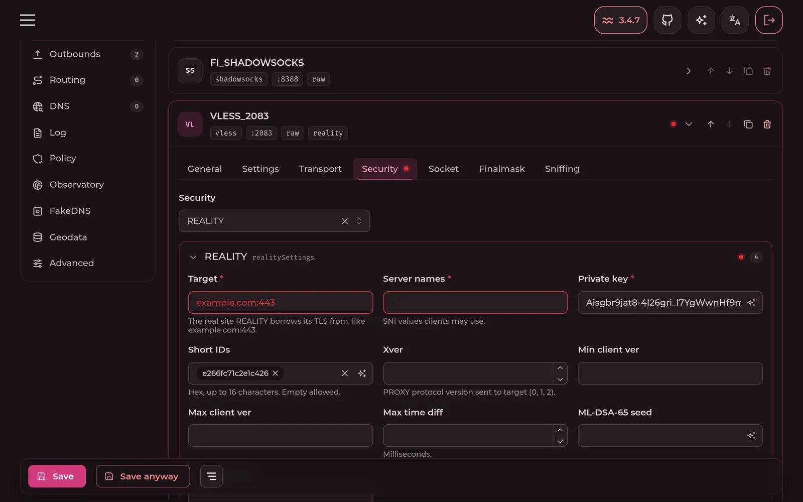
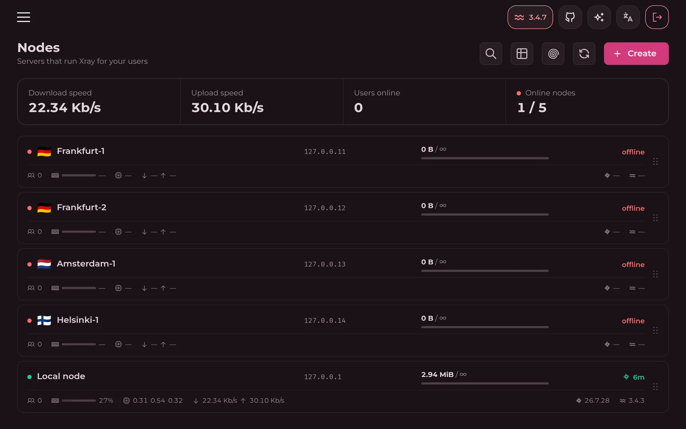
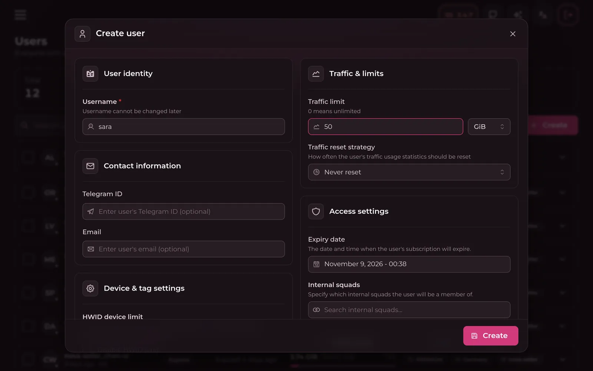
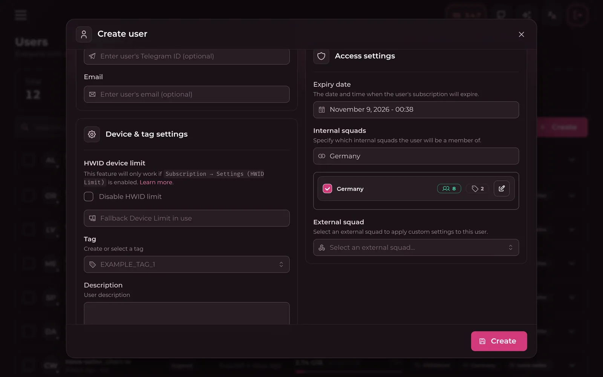
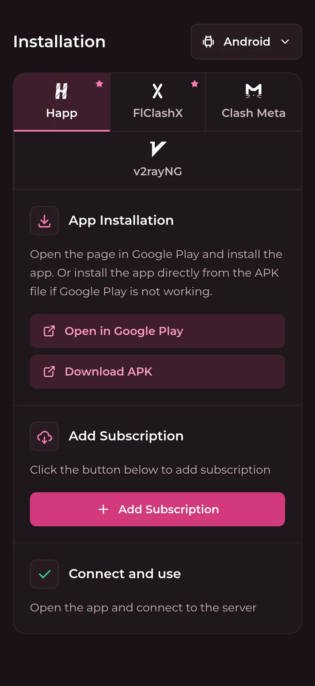

Install the panel
Umiji runs in Docker from ready-made images, so the server only needs Docker, and every command here runs on the server. The panel, the sub page and the nodes each have their own install; this step is the panel's. The full walkthrough, with every setting, is in DEPLOY.md. Here is the short version.
What you need
- A server for the panel with root access, x86-64 or ARM. Ubuntu or Debian is easiest.
- A server for your first node. This is where your users' traffic goes.
- Two domains: one for the panel, like
panel.example.com, and one for the subscription page, likesub.example.com. Point both A records at the panel server first, because the HTTPS certificates need them.
Install
# Docker
curl -fsSL https://get.docker.com | sh
# the files, in /opt/umiji
mkdir -p /opt/umiji/caddy && cd /opt/umiji
base=https://raw.githubusercontent.com/therewasluna/umiji-backend/main/tools/deploy
curl -fsSL -o docker-compose.yml $base/docker-compose.yml
curl -fsSL -o caddy/Caddyfile $base/caddy/Caddyfile
curl -fsSL -o .env $base/env.example
chmod 600 .env
nano .env
In .env, fill in your two domains. Leave the other lines as they are: they say the sub page
will run on this server too, with built-in HTTPS.
PANEL_DOMAIN=panel.example.com
SUB_DOMAIN=sub.example.comThen start it. The first start pulls the images:
docker compose up -d
There's nothing to generate by hand. On the first start the panel makes its own secrets in
/opt/umiji/secrets/; keep a copy of that folder with your backups, because its
APP_SECRET also encrypts the brokers' bot tokens.
HTTPS: built-in, or your own nginx
The panel listens only on the server itself, on 127.0.0.1:3000, and answers only over
HTTPS. Pick one way to put it online. Either way, a visitor can't choose the IP the panel sees, which
its login limit and IP records rely on.
Built-in Caddy is on by default, so there's nothing to set up. Caddy takes ports 80 and
443, reads the domains from .env, and gets and renews the certificates itself. Both domains
must already point at the server, and no other web server may run on it.
docker compose logs -f umiji-caddy shows each certificate arriving.
Your own nginx suits a server that hosts other sites too. In .env, make the
line say COMPOSE_PROFILES= and run docker compose up -d, then on the server:
-
Install nginx and certbot. If the firewall is on, open the web ports. Keep 3000, 3001 and 3010 closed:
only nginx should reach them.
apt install -y nginx certbot python3-certbot-nginx # only if "ufw status" says active ufw allow 'Nginx Full' -
Write
/etc/nginx/sites-available/umijiwith your domains. Keep the sub page'sserverblock only if the sub page runs on this server.map $http_upgrade $connection_upgrade { default upgrade; '' close; } # The panel reads the visitor's IP from X-Umiji-Real-IP, so nginx sets it and ignores whatever the visitor sent. map $remote_addr $umiji_real_ip { default $remote_addr; # A sub page on another server that reaches the panel at https://panel.example.com sends its own # visitors' IPs. Trust it by its IP: # 203.0.113.20 $http_x_umiji_real_ip; } # Panel server { listen 80; server_name panel.example.com; # Bot broadcast photos are up to 10 MB. client_max_body_size 20m; # Backend-tools links carry a short-lived bearer token in the query string. location ^~ /api/backend-tools { access_log off; proxy_pass http://127.0.0.1:3000; proxy_http_version 1.1; proxy_set_header Host $host; proxy_set_header Upgrade $http_upgrade; proxy_set_header Connection $connection_upgrade; proxy_set_header X-Real-IP $remote_addr; proxy_set_header X-Umiji-Real-IP $umiji_real_ip; proxy_set_header X-Forwarded-For $proxy_add_x_forwarded_for; proxy_set_header X-Forwarded-Proto $scheme; } location / { proxy_pass http://127.0.0.1:3000; proxy_http_version 1.1; proxy_set_header Host $host; proxy_set_header Upgrade $http_upgrade; proxy_set_header Connection $connection_upgrade; proxy_set_header X-Real-IP $remote_addr; proxy_set_header X-Umiji-Real-IP $umiji_real_ip; proxy_set_header X-Forwarded-For $proxy_add_x_forwarded_for; proxy_set_header X-Forwarded-Proto $scheme; } } # Subscription page, if it runs on this server server { listen 80; server_name sub.example.com; location / { proxy_pass http://127.0.0.1:3010; proxy_http_version 1.1; proxy_set_header Host $host; proxy_set_header X-Real-IP $remote_addr; proxy_set_header X-Forwarded-For $proxy_add_x_forwarded_for; proxy_set_header X-Forwarded-Proto $scheme; } } -
Turn it on and get the certificates. Certbot adds HTTPS and the http→https redirect to the file, and
renews the certificates on its own.
ln -s /etc/nginx/sites-available/umiji /etc/nginx/sites-enabled/ rm -f /etc/nginx/sites-enabled/default nginx -t && systemctl reload nginx # only the domains this server serves certbot --nginx -d panel.example.com -d sub.example.com # checks that renewal will work certbot renew --dry-run - Open
https://panel.example.com. Until certbot has run it won't load, because the panel refuses plain http.
What the config does: X-Umiji-Real-IP carries the visitor's IP, and nginx always writes it
itself, so nobody can send their own. The panel refuses requests without X-Forwarded-For and
X-Forwarded-Proto. The Upgrade headers carry the SSH terminal, and
client_max_body_size leaves room for broadcast photos.
Behind a CDN, like Cloudflare's orange cloud, set Cloudflare's SSL mode to
Full (strict). Then tell the proxy the CDN's IP ranges, or every visitor arrives from the
CDN's IPs and they all share one login limit. With Caddy, remove the # from the six lines at the top of
/opt/umiji/caddy/Caddyfile, list them there and run docker compose restart umiji-caddy.
Also turn off Cloudflare's Always Use HTTPS so certificate renewals still reach Caddy. With
nginx, add this at the top of the file, one line per range from
cloudflare.com/ips:
set_real_ip_from 173.245.48.0/20;
set_real_ip_from 2400:cb00::/32;
# ...the other ranges
real_ip_header X-Forwarded-For;
real_ip_recursive on;Nodes behind a CDN need their own setup for the IP limit: see IP limit behind a CDN.
Sign in and install the sub page
- Open
https://panel.example.com. The first account you register owns the panel, so do this right away. - Read and accept the disclaimer that appears on your first visit.
- Open the menu, go to Umiji Settings, find API Tokens and create a token. Copy it now: it's shown only once.
-
Back on the server, install the sub page in its own folder:
mkdir -p /opt/umiji-sub/caddy && cd /opt/umiji-sub base=https://raw.githubusercontent.com/therewasluna/umiji-subscription-page/main/deploy curl -fsSL -o docker-compose.yml $base/docker-compose.yml curl -fsSL -o caddy/Caddyfile $base/caddy/Caddyfile curl -fsSL -o .env $base/env.example chmod 600 .env nano .env -
Set these four lines in its
.env. The emptyCOMPOSE_PROFILESleaves HTTPS to the panel's Caddy, which already servessub.example.com.SUB_DOMAIN=sub.example.com UMIJI_PANEL_URL=http://umiji:3000 # the token you just copied UMIJI_API_TOKEN= COMPOSE_PROFILES= - Run
docker compose up -din/opt/umiji-sub. Docker warns that theumiji-networknetwork already exists. That's expected: the sub page joins the panel's network.
Want the sub page on a server of its own? Its
DEPLOY.md covers
it: there it runs its own Caddy, and the panel's .env gets SUB_PAGE_HERE=no and
that server's IP.

https://sub.example.com/ on its own shows nothing. That's normal: the sub page only answers real subscription links, which you'll have in step 9.
Create a config profile
A config profile is the Xray setup your nodes run. Most setups need just one. It holds the inbounds, the ports your users connect to.
- Go to Config Profiles and press Create.
- Give it a name, like
Reality, and press Create. - Open the new profile. It opens in the Visual editor, with sections for inbounds, outbounds, routing and the rest.

Add a VLESS inbound with REALITY
VLESS with REALITY is a good first inbound. It needs no certificate and no domain of its own, and to anyone watching the traffic it looks like a visit to a real website.
- In the Inbounds section, press New inbound.
- Pick VLESS. It's added with REALITY over raw TCP on port 2083, and a red dot shows what still needs filling in.


- Open the Security tab. The private key and a short ID are already generated for you.
- In Target, enter a real HTTPS site that isn't yours, with its port, like
www.example.org:443. REALITY borrows its TLS from that site. - In Server names, enter that site's domain, like
www.example.org. - Press Save. If the port should differ, change it on the General tab first.

Every change is checked by a real Xray core in your browser, so typos show up before you save. If you prefer raw JSON, switch to the JSON tab. Both views edit the same config.
Add a node
A node is a server that runs Xray with your profile. Umiji can install it for you over SSH.
- Go to Nodes and press Create. Automatic install is selected.
- Fill in an Internal name, the Country (its flag shows in the list), the Server IP and the server's Root password. Keep Node Port at 2222 unless it's taken.
- Press Next. Under Core configuration, pick your profile and tick the inbound from step 4.
- Press Install node and watch the steps: SSH, Docker, the node container, then the handshake with the panel.

Open two ports on the node's firewall: the node port (2222), so the panel can reach it, and the inbound's port (2083), so your users can. If the install ends with “the panel can't reach it”, the node port is the one that's closed.
Prefer to do it yourself? Pick Manual setup. The panel shows a
docker-compose.yml to copy onto the node, then waits until Xray is up.

Create a host
The inbound is the server side. A host is what users see in their app: a name and the address to connect to.
- Go to Hosts and press Create.
- Turn on Host visibility, so the host goes out in subscriptions.
- In Remark, write the name users will see. Start it with a flag emoji, like
🇩🇪 Germany, and apps show the flag. - Press No inbound selected, open your profile and pick the inbound from step 4. Save the choice with the disk icon.
- In Address, enter the node's IP or a domain that points to it. Set Port to the inbound's port, then Save.


Everything else, like SNI overrides or hiding a host, lives under Options. A new host runs fine without any of it.
Make an internal squad
An internal squad decides which inbounds its users may use. A user only gets hosts for inbounds in their squads.
- Go to Internal Squads, press Create and name it, like
Germany. - Open the squad. Expand your profile and tick the inbound from step 4. The ✓ and ✕ buttons tick or clear a whole profile at once.
- Press Save.

Create a user
- Go to Users and press Create.
- Enter a Username. It can't be changed later.
- Set a Traffic limit (0 means unlimited) and how often it resets under Traffic reset strategy.
- Pick the Expiry date. The quick buttons add a month, three months or a year.
- Under Internal squads, tick the squad from step 7, then press Create.


Connect from a phone
Opened in a browser, the link shows the subscription page. It shows how much traffic is left and walks the user through installing an app.
- Open the link on the phone. The page picks the platform by itself. Change it in the top-right menu if needed.
- Pick an app, like Happ or v2rayNG, and install it with the buttons under App Installation.
- Press Add Subscription. The app opens with the subscription added.
- Pick the host,
🇩🇪 Germany, and connect.


Back in the panel, the user's row now shows traffic moving, and the node shows one user online. If the app can't connect, check the inbound port on the node's firewall and that the host's address and port match the node.
You're live.
One profile, one node, one host, one squad and one user, working end to end. Here's where to go next.